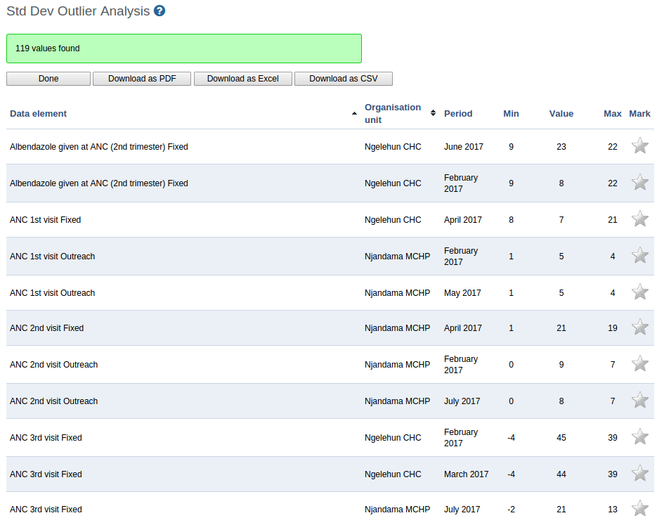

The standard deviation outlier analysis identifies values that are numerically distant from the rest of the data. The analysis is based on the standard normal distribution. The system calculates the average, based on values since the beginning of time, for one particular combination of organisation unit, data element, category option combination and attribute option combination. Outliers can occur by chance but often indicate a measurement error or a heavy-tailed distribution which leads to very high numbers. You should investigate measurement errors and try to correct them before you discard them from the analysis.
![[Warning]](../Resources/warning.png)
|
Warning |
|---|---|
|
It's not recommended to use tools or interpretations that assume a normal distribution for heavy-tailed distributions. For example: the standard deviation outlier analysis is not an appropriate tool when you expect huge seasonal variations in the data. |

|
-
Open the Data Quality app and click Std dev outlier analysis.
-
Select From date and To date.
-
Select data set(s).
-
Select Parent organisation unit.
All children of the organisation unit will be included. The analysis is made on raw data "under" the parent organisation unit, not on aggregated data.
-
Select a number of standard deviations.
This refers to the number of standard deviations the data is allowed to deviate from the mean before it is classified as an outlier.
-
Click Start.
The analysis process duration depends on the amount of data that is being analysed. If there are standard deviations outliers, they will be presented in a list.
 For each outlier, you'll see the data element, organisation unit, period, minimum value, actual value and maximum value. The minimum and maximum values refer to the border values derived from the number of standard deviations selected for the analysis.
![[Tip]](../Resources/tip.png)
|
Tip |
|---|---|
|
Click the star icon to mark an outlier value for further follow-up. |
You can modify an outlier value directly in the analysis result list:
-
In the value column, click inside the field that contains the value you want to change.
-
Enter a value and then navigate away from that field either by clicking tab or anywhere outside the field.
The system provides an alert if the value is still outside the defined minimum and maximum values, but the value will be saved in any case. The field will have a red background color if the value is outside the range, and a green if inside.